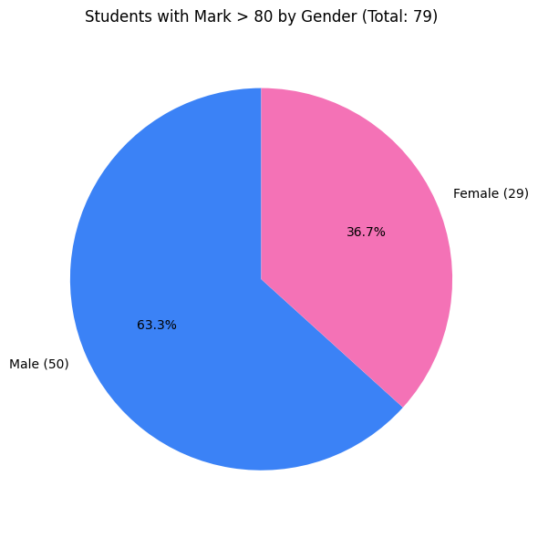
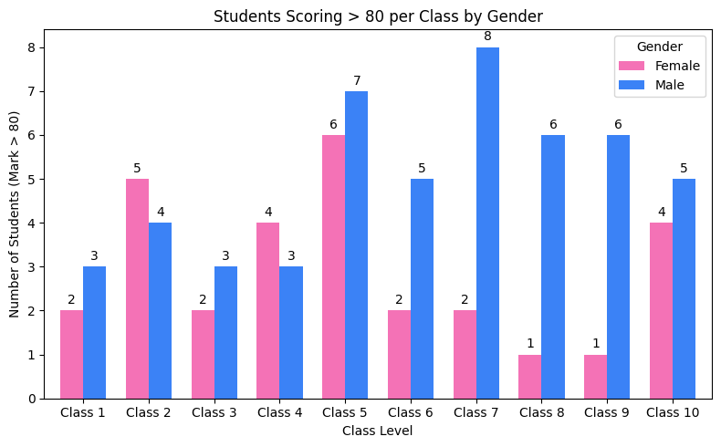

Python - Data Cleaning & Gender Breakdown (> 80 Marks)
This project demonstrates an end-to-end data engineering and analysis pipeline using Python, Pandas, and Matplotlib (Presentation_Gender_Python.ipynb). It loads student_toclean.csv, runs data integrity checks, cleans strings and maps class labels to integer levels, filters students scoring above 80 marks, and visualizes the overall gender split (gender_pie.png) alongside per-class male vs. female comparisons (gender_bar.png).
Step 1 & 2: Loading Data & Integrity Testing
We load student_toclean.csv and run test_data_integrity(df) to inspect null counts per column, non-string name entries, and leading/trailing spaces in name.
# loading data and integrity
import pandas as pd
from google.colab import files
uploaded = files.upload()
# 1. Load data from the target CSV file
df = pd.read_csv('student_toclean.csv')
# 2. Define Data Quality Testing Function
def test_data_integrity(df):
print("--- Data Integrity Check ---")
# This checks each column and returns how manu NULL values found in each column
print(df.isnull().sum())
# Check if names are strings and clean of bounding spaces
#ignoring NULLS as we have already checked that above, find count of any non strings in the name column
non_str_names = df['name'].apply(lambda x: not isinstance(x, str) if pd.notnull(x) else False).sum()
#check for leading and trailing spaces only
space_names = df['name'].apply(lambda x: x != x.strip() if isinstance(x, str) else False).sum()
#show what we have found
print(f"Non-string names: {non_str_names}")
print(f"Names with extra spaces: {space_names}")
test_data_integrity(df)Step 3: Data Cleaning & Class Mapping
Rows missing critical fields (name, class, mark, gender) are dropped into a copy df_clean. Whitespace is stripped from names, gender values are normalized to lowercase and trimmed, and word/number class labels are mapped to integer class_level values.
#Cleaning
# 3. Clean Data & Replace Word Classes with Integers
#if any null was found in columns included in subset then remove that row
#we create a copy of this new data and leave the original data intact
df_clean = df.dropna(subset=['name', 'class', 'mark', 'gender']).copy()
#remove all leading/trailing whitespace only, spaces in the middle are ok
df_clean['name'] = df_clean['name'].str.strip()
#sets the value to lowercase and removes all leading/trailing whitespace
df_clean['gender'] = df_clean['gender'].str.lower().str.strip()
# Normalize class strings first (trim spaces and title-case)
class_clean = df_clean['class'].astype(str).str.strip().str.capitalize()
word_to_int = {
'One': 1, 'Two': 2, 'Three': 3,
'Four': 4, 'Five': 5, 'Six': 6,
'Seven': 7, 'Eight': 8, 'Nine': 9,
'Ten': 10, 'Fifth': 5,
'1': 1, '2': 2, '3': 3, '4': 4, '5': 5,
'6': 6, '7': 7, '8': 8, '9': 9, '10': 10
}
#convert all word values to their integer equivalent
#fix some word values such as fifth to 5.
df_clean['class_level'] = df_clean['class'].map(word_to_int).astype(int)
print("\nCleaned Sample with Integer Class Levels:")
#show a sample of the values from the start
print(df_clean[['name', 'class', 'class_level', 'mark', 'gender']].head())Step 4: Students Scoring > 80 & Overall Gender Breakdown
We filter for students scoring strictly above 80 marks (mark > 80), compute the total count and gender breakdown, and display the distribution as a pie chart (gender_pie.png).
# Get everyone who got more than 80 marks
high_scorers = df_clean[df_clean['mark'] > 80]
# Total count of people with mark > 80
total_over_80 = len(high_scorers)
# Breakdown by gender (male / female)
gender_breakdown = high_scorers['gender'].value_counts()
print(f"Total people with mark > 80: {total_over_80}")
print("\nBreakdown by gender:")
print(gender_breakdown)
#show as a pie chart
import matplotlib.pyplot as plt
# Format labels with both category name and exact count
labels = [f"{g.capitalize()} ({cnt})" for g, cnt in gender_breakdown.items()]
fig, ax = plt.subplots(figsize=(6, 6))
ax.pie(
gender_breakdown.values,
labels=labels,
autopct='%1.1f%%',
startangle=90,
colors=['#38bdf8', '#60a5fa']
)
ax.set_title(f"Students with Mark > 80 by Gender (Total: {len(high_scorers)})")
ax.axis('equal') # Keep pie circular
plt.tight_layout()
plt.show()Overall Gender Breakdown (> 80 Marks)

Figure 1.1: Pie chart showing students scoring above 80 marks split by gender (Male: 50 / 63.3%, Female: 29 / 36.7%, Total: 79).
Step 5: Per-Class Gender Breakdown (> 80 Marks)
Next, we group high scorers (mark > 80) by class_level and gender to compare female (#f472b6) and male (#3b82f6) student counts across each class (gender_bar.png).
#get the same data again but for each class
#import matplotlib.pyplot as plt
# Filter for students scoring strictly over 80
#high_scorers = df_clean[df_clean['mark'] > 80]
# Count students per class_level broken down by gender (0 if none in a class/gender)
breakdown = (
high_scorers.groupby(['class_level', 'gender'])
.size()
.unstack(fill_value=0)
.sort_index()
)
# Plot grouped bar chart (using only the gender columns)
gender_cols = [c for c in ['female', 'male'] if c in breakdown.columns]
ax = breakdown[gender_cols].plot(
kind='bar',
figsize=(8, 5),
color = ['#f472b6', '#3b82f6'],
width=0.7
)
ax.set_title('Students Scoring > 80 per Class by Gender')
ax.set_xlabel('Class Level')
ax.set_ylabel('Number of Students (Mark > 80)')
ax.set_xticklabels([f"Class {c}" for c in breakdown.index], rotation=0)
ax.legend(title='Gender', labels=[c.capitalize() for c in gender_cols])
for container in ax.containers:
ax.bar_label(container, padding=3)
plt.tight_layout()
plt.show()Per-Class Gender Comparison (> 80 Marks)

Figure 1.2: Grouped bar chart comparing female (pink) and male (blue) students scoring above 80 marks across Class 1 through Class 10.